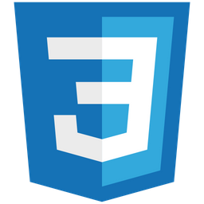

Позвольте
мне
представиться

Александр
Онищенко
Студент в сфере IT-консалтинга
Здравствуйте!
Краткая информация обо мне
Мне 18 лет, и я живу в метропольном регионе г. Гамбург. Я прохожу обучение на IT-специалиста по системной интеграции. В свободное время я изучаю языки программированием и веб-разработку. Но мне также нравится проводить время вдали от экрана — я люблю путешествовать и активно проводить время. Я уверен, что IT-отрасль идеально подходит для моей карьеры, так как за ней будущее.
Чем я занимаюсь?
В данный момент я изучаю:


Мой стек:

Оставайтесь в курсе
Я активно работаю над своими проектами и буду загружать их на GitHub
Подписывайтесь, чтобы увидеть больше!